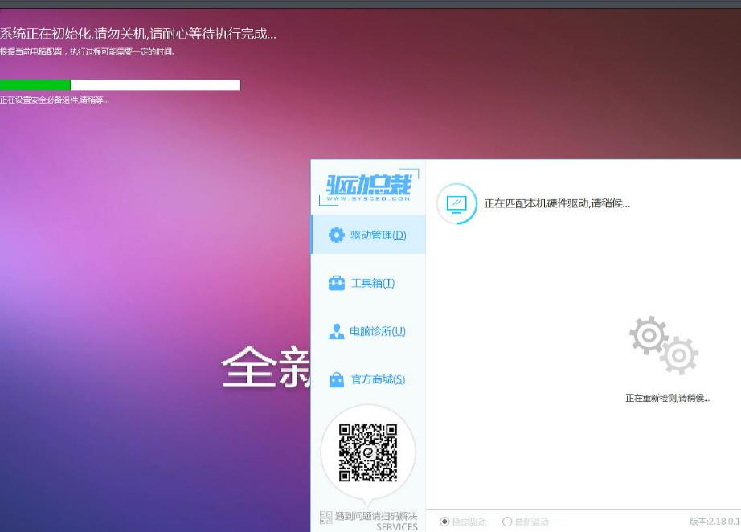

20250923
1. i5-10400+470board verification

hardinfo:
# lscpu | grep -i model
Model: 165
Model name: Intel(R) Core(TM) i5-10400 CPU @ 2.9
# dmidecode | grep -i 470 -A10 -B10
Handle 0x0002, DMI type 2, 15 bytes
Base Board Information
Manufacturer: W
Product Name: SDNS-H470A1-D248
Version: 1.0
Serial Number:
Asset Tag: Default string
Features:
Board is a hosting board
Board is replaceable
Location In Chassis: Default string
Chassis Handle: 0x0003
Type: Motherboard
Contained Object Handles: 0
win7, blue screen.

2. i3-10100+460board verification
hard info:
# dmidecode | grep "Base Board" -A20
Base Board Information
Manufacturer: Y
Product Name: B46T1
Version: Default string
Serial Number: B46T1022308S0012
Asset Tag: Default string
Features:
Board is a hosting board
Board is replaceable
Location In Chassis: Default string
Chassis Handle: 0x0003
Type: Motherboard
Contained Object Handles: 0
# lscpu | grep -i model
Model: 165
Model name: Intel(R) Core(TM) i3-10100 CPU @ 3.60GHz
vm info:

gpu and cpu info:

3. i5-10400+470board installation
Using sata disk for installation.
qxl:
4. i5-10400+470board verify
qxl workable xml for vfio-gpu:
5. extrace rom

press 2, s:

6. win7 verification
6.1 legacy rom
csm configuration, rom为legacy:
install win7 in host(Xiaobing):
Partition:
restore system:

Install driver:

Activate:
After reboot:

6.2 uefi rom
如果打开csm, 而后rom选择为uefi呢？
蓝屏.
6.3 close csm
如果关闭csm, 则安装会失败。
7. ubuntu installation
csm(Boot option filter: "legacy only"), ubuntu22.04 installed but cannot startup.
csm(Boot option filter: "uefi/legacy"), ubuntu18.04 installed,can startup.
7.1 video(legacy)
启动虚机时无GOP.
7.2 video(uefi)
启动虚机时有GOP.
系统信息：
安装信息:

安装到即将进入系统时(安装第二步)，切换为video（legacy).
但是切换为video(legacy)后，无法显示画面。
7.3 video(legacy)/guest bios
也是解决uefi卡log, 也是适配新机器。
没有用, 一样存在问题,guest bios。
8. proxmox verification
Refers:
6-10代：如果你的机器可以bios开csm并把核显设置为Legacy模式。那你就虚拟机seabios+i440fx或者q35直接用就是，都不需要加载什么rom，即使要加载也是从机器里面提取的而已（具体请参考网上一大堆成功案例。也不需要我这里提供的什么6-14-qemu10.rom这货）。
Extract the rom: